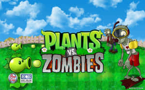
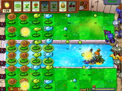
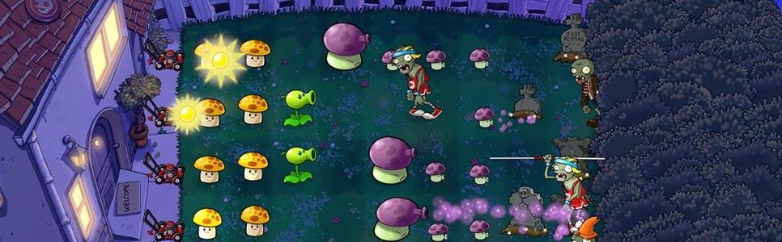
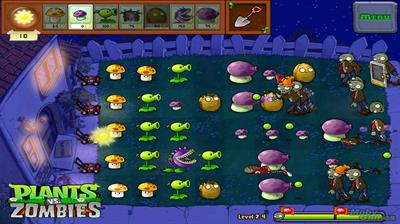
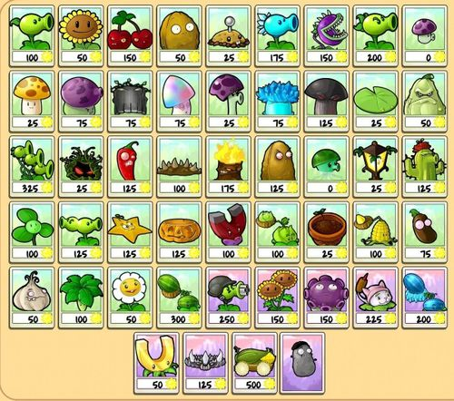
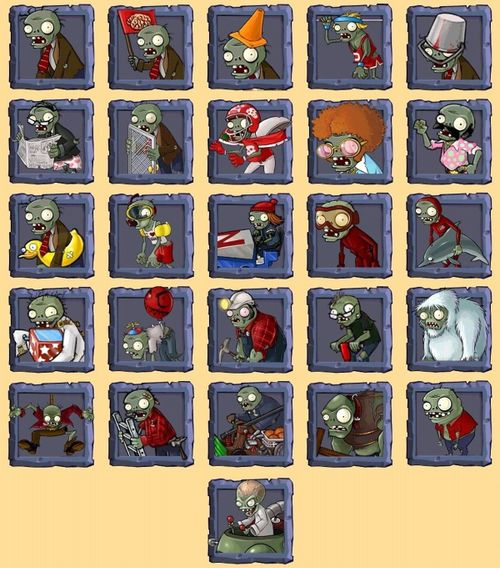
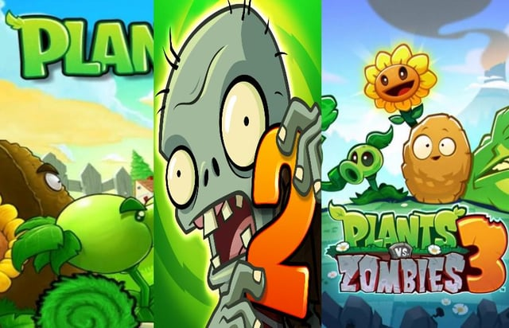
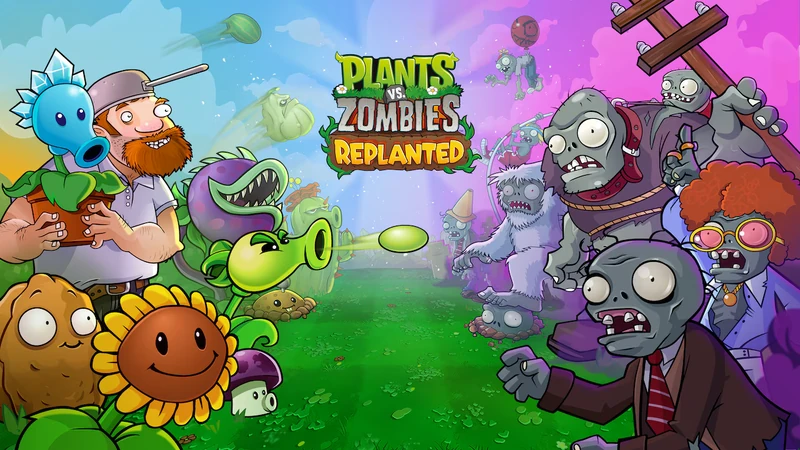

تحقیق موضوعی · ۷ مهر ۱۴۰۴
گیاهان در برابر زامبیها
Plants vs. Zombies یک مجموعه بازی ویدیویی است که جرج فَن (George Fan) خلق کرد و استودیوی PopCap Games آن را در ۵ مه ۲۰۰۹ برای ویندوز و مک منتشر کرد. داستان مجموعه حول شخصیت «دیوِ دیوانه» (Crazy Dave) و گیاهانی میچرخد که جلوی حملهی زامبیها به رهبری دکتر ادگار زامباس را میگیرند.

در یک نگاه
- سازنده اصلی
- PopCap Games (بعداً زیرمجموعه EA)
- طراح
- جرج فَن
- هنرمند
- ریچ ورنر (Rich Werner)
- آهنگساز
- لورا شیگیهارا (Laura Shigihara)
- اولین انتشار
- ۵ مه ۲۰۰۹ (ویندوز و مک)
- سبک
- برجدفاعی (Tower Defense)
- زمان ساخت
- حدود ۳.۵ سال، با تیمی چهار نفره
- امتیاز متاکریتیک (PC)
- ۸۷ از ۱۰۰
- تازهترین نسخه
- Plants vs. Zombies: Replanted — ۲۳ اکتبر ۲۰۲۵
گیمپلی چطور کار میکند؟
زمین بازی یک حیاط است که به ۵ یا ۶ ردیف تقسیم میشود. زامبیها از سمت راست وارد میشوند و باید قبل از رسیدن به خانه متوقف شوند. منبع اصلی بازی «آفتاب» (Sun) است: آفتاب از آسمان میبارد یا آفتابگردانها تولیدش میکنند و شما با آن گیاه میکارید.
- گیاهان اقتصادی: آفتابگردان و قارچآفتابی که منابع تولید میکنند.
- گیاهان تهاجمی: نخودپاش، تکتیرانداز برفی، گیاه گوشتخوار و ذرتتوپ.
- گیاهان دفاعی: گردوی دیواری، گردوی بلندین و آفتابگردان قبرستانی.
- گیاهان انفجاری: بمبگیلاسی، سیبزمینیمین و فلفلتند.
- مراحل متنوع: روز، شب (با قارچها)، استخر، مه، پشتبام و مینیگیمهایی مثل Vasebreaker و I, Zombie.



شخصیتها
گیاهان
نسخه اول بازی حدود ۴۹ گیاه دارد که هرکدام هزینهی آفتاب و نقش تاکتیکی مخصوص خودشان را دارند. نکتهی جالب طراحی: قیمت آفتابگردان در جریان ساخت از ۱۰۰ به ۵۰ کاهش پیدا کرد تا بازیکن تازهکار ترغیب شود اول اقتصادش را بسازد، نه اینکه مستقیم سراغ نخودپاش برود.

زامبیها
زامبیها از سادهترین حالت (زامبی معمولی) تا انواع تخصصی مثل زامبی مخروطبهسر، سطلبهسر، نردباندار، غواص، ژیمناست با میله و زامبی روزنامهخوان ادامه پیدا میکنند. رئیس نهایی بازی دکتر زامباس است که با ربات غولپیکر «زامبات» میجنگد.

پشتصحنهی ساخت
- ایدهی اولیه ادامهای بر بازی Insaniquarium بود؛ ابتدا قرار بود فضاییها به باغ حمله کنند، اما بعد از اینکه فَن طرح «زامبی ایدهآل» را کشید، دشمنها به زامبی تغییر کردند.
- نامهای کاری بازی Weedlings و Bloom & Doom بود. اسم پیشنهادی دیگر Lawn of the Dead (بازی با عنوان فیلم Dawn of the Dead) بود، ولی جرج رومرو اجازهی استفاده نداد.
- ایدهی «گیاه به جای برج» از دیدن برجهای Warcraft III آمد و طراحی کارتها و تعادل بازی از Magic: The Gathering الهام گرفت.
- ترانهی تیتراژ پایانی، «Zombies on Your Lawn» ساخته و اجرای لورا شیگیهارا، خودش بهتنهایی به یک پدیدهی ویروسی تبدیل شد و بخشی از موفقیت بازی مدیون آن است.
خط زمانی مجموعه

- ۲۰۰۹ — Plants vs. Zombies: نسخهی اصلی برای PC و مک؛ بعداً روی تقریباً هر پلتفرمی منتشر شد.
- ۲۰۱۰ — Game of the Year Edition: بازنشر با محتوای اضافه.
- ۲۰۱۱–۲۰۱۴ — نسخههای چینی: Social Edition، Great Wall Edition و Endless Edition.
- ۲۰۱۳ — PvZ Adventures: اسپینآف فیسبوکی که در اکتبر ۲۰۱۴ تعطیل شد.
- ۲۰۱۳ — PvZ 2: It's About Time: دنبالهی موبایلی رایگان با مکانیک «غذای گیاه».
- ۲۰۱۴ — Garden Warfare: تغییر ژانر به شوتر سومشخص آنلاین.
- ۲۰۱۶ — Garden Warfare 2: دنبالهی شوتر با حالت آفلاین.
- ۲۰۱۶ — PvZ Heroes: بازی کارتی دیجیتال.
- ۲۰۱۹ — Battle for Neighborville: سومین شوتر مجموعه.
- ۲۰۲۴ — PvZ 3: Welcome to Zomburbia: عرضهی آزمایشی مجدد با بازطراحی کامل (بعداً PvZ 3: Evolved).
- ۲۰۲۵ — PvZ: Replanted: بازسازی نسخهی اصلی، منتشرشده در ۲۳ اکتبر ۲۰۲۵ برای PC و کنسولها.

بازخورد و میراث
- امتیاز متاکریتیک نسخهی PC: ۸۷/۱۰۰؛ نسخههای iOS تا ۹۳/۱۰۰ هم گرفتند.
- در ۹ روز اول روی App Store بیش از ۳۰۰٬۰۰۰ نسخه فروخت و از یک میلیون دلار درآمد گذشت.
- سریعترین بازی پرفروش تاریخ PopCap شد و از Bejeweled و Peggle جلو زد.
- برندهی جوایز Golden Joystick 2010 در دو بخش «بازی دانلودی سال» و «بازی استراتژیک سال»، و برندهی «بهترین بازی کژوال» در IMGA 2011.
- نامزد جوایز BAFTA، Game Developers Choice و Interactive Achievement Awards در چند دوره.
- در سال ۲۰۱۱، EA شرکت PopCap را با ۷۵۰ میلیون دلار خرید؛ سال بعد جرج فَن و ۴۹ کارمند دیگر تعدیل شدند و او بعداً بازی Octogeddon را ساخت.
- نسخهی اصلی روی Steam هنوز رتبهی «Overwhelmingly Positive» با بیش از ۱۳۰٬۰۰۰ نقد کاربری دارد.
گالری تصاویر


تصاویر از طریق جستوجوی تصویر وب جمعآوری شدهاند و حق مالکیت آنها متعلق به PopCap Games / Electronic Arts است. صرفاً برای مقاصد توضیحی و غیرتجاری در این صفحه استفاده شدهاند.
منابع
🎮 بازیاش را هم ساختیم
بر پایهی همین تحقیق، یک نسخهی مرورگری از بازی با HTML، CSS و JavaScript خالص در همین مخزن پیادهسازی شده است: ۹ گیاه، ۷ نوع زامبی، ۵ مرحله و حالت بقای بیپایان.